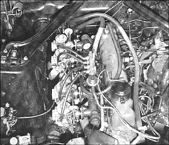
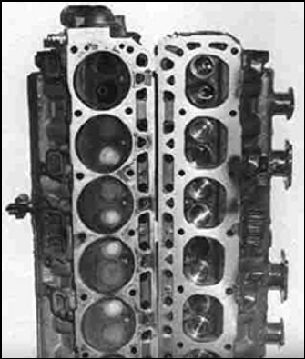

All dressed up with no less than four Honda Keihin carburetors, the little six-banger was able to produce 125 hp at the rear wheels at 4800 rpm. With this setup the car performed almost as if it was fuel injected. Photography:Bud Lange |
Welcome back, all you "six--cylinder fans," to the continuation of our report on subsequent alterations to the 200 cubic inch Mustang six! For the benefit of you new readers, we started with a standard Mustang 200-inch six, recording 65 horsepower at the rear wheels on a chassis dynamometer, in subsequent changes, we installed a larger Ford carburetor from the 240 cubic inch six-cylinder engine, milled the head .060 and Installed stee1 tubing headers with a dual-muffler setup. We wound up with 100 horsepower at the rear whee1s, and in the process lost none of the economy or smoothness of operation inherent in this particular car. At this juncture, we decided that since the engine responded so well to minor enhancements we would dig a little further and see what we could come up with In the way of more performance goodies.
Automatically, our first thoughts were of the cam-shaft, which in the case of the stock unit is designed strictly for maximum torque and economy. In this area, it just can-not beat. However, the horsepower range comes to a screaming halt at 4000 rpm, , and since we were desirous of going on up to 5500 rpm, we consulted Mr. Ed Iskenderian. We told Ed we did not wish to destroy the inherent smooth-ness and tractability of the little six and would like a hydraulic action cam to maintain valve train silence. |
He responded by placing in our hands just exactly the cam we had asked for. The specifications are as follows 260° dur-ation, .408 lift, 42° overlap, in-take opens 21° BTDC, intake opens 21° ATDC, exhaust opens 59° BBDC, exhaust closes 21° ATDC. By comparison, the stock cam has 256° duration. .368 lift and 28° overlap.
After changing the cam, we had to add a little more spring pressure for the added rpm. So we came up with some stock Ford items that are not only dirt cheap, but are perfect for this combo. We used the valve retainers from a 1962 260 Ford (part number C20Z-65I4--A, 12¢ each). We also used the standard springs from a 289 Ford (part number B6A-6513-A, 43¢ each). Multiplying these prices by the six cylinder, you can see what we mean by a reasonable price for springs and retainers...all from your friendly Ford dealer.
Spring pressure worked out at 90 pounds (valve closed) and 190 pounds open. Having installed the cam and springs, we observed a 5 horsepower increase. However, we were running the engine at 4500 rpm. Then we noticed a favorable by-product of the change; we were now able to rev the little six up to 5500 rpm with no hydraulic pump-up. At the same time we put the cam in, we also installed pushrods (part number CODE-6565-B) and adjustable rockers (part number CODZ-6564-A) from earlier Falcon engines. They are of the same ratio, but gave us a handy method of adjusting pushrod lengths when changing cams, I would certainly recommend this change-over. |

On the left is the standard 200 cubic inch cylinder head with stock valves; head on right is fitted with 1/8-inch oversize exhaust valves. |